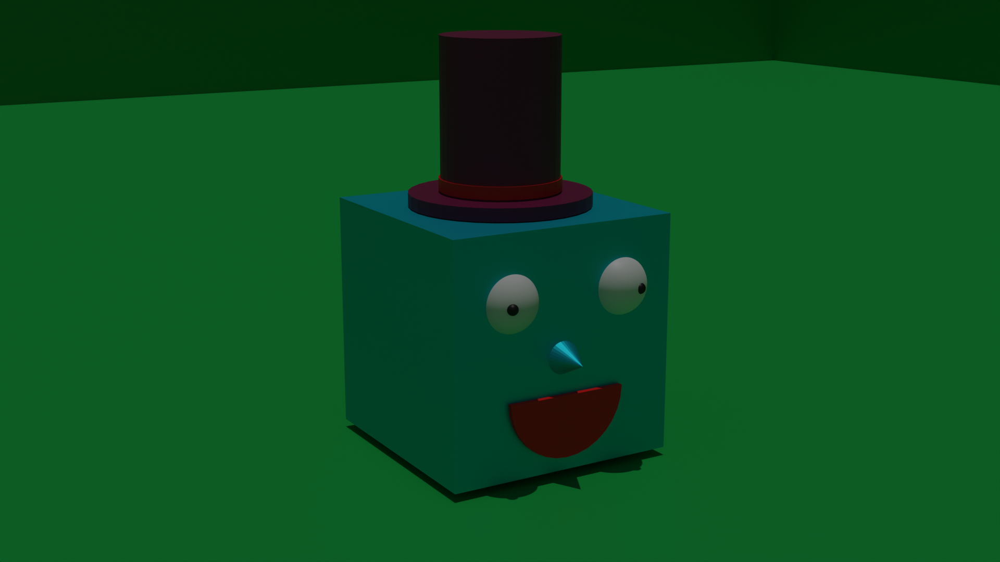
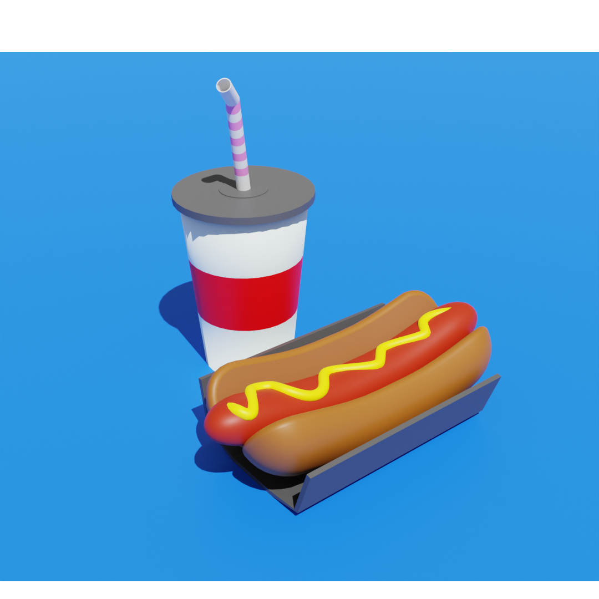

Soy Tomás Cejas y este es mi primer proyecto de Front End Fundamentals.
Se me ocurrió hacer unos modelos en Blender, terminó siendo una doble practica ya que no lo uso hace tiempo.
Hice estos renders a continuacion:

Cubito
Un cubo feliz y un poco bisco.
Tiene un sombrero

Pancho (Hot dog o como lo conozcan )
Este me tomó mas tiempo de producción pero me gustó mucho el resultado